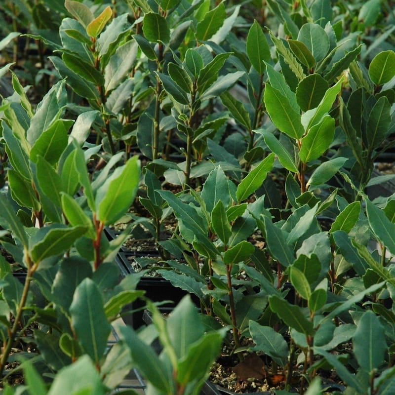
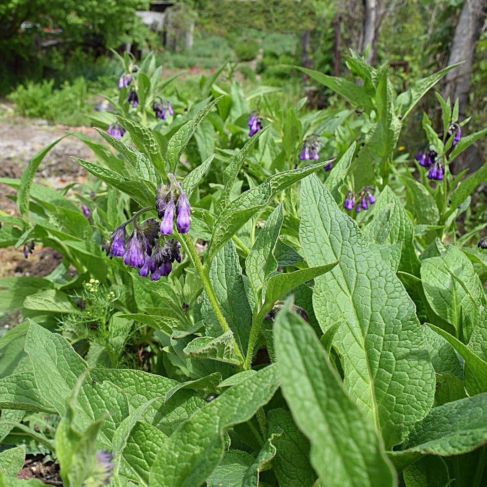
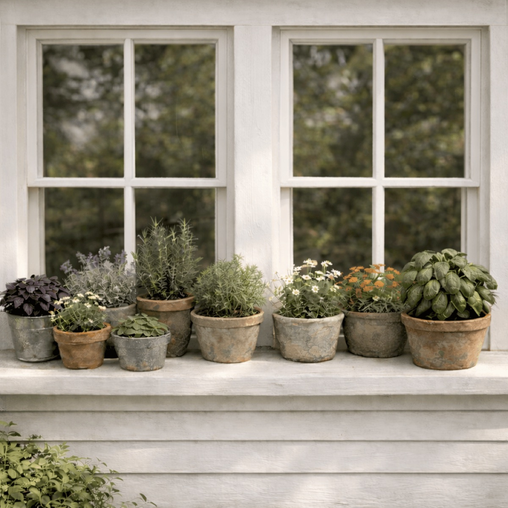

Bay laurel
Bay laurel (Laurus nobilis), an evergreen plant offered by the nursery.
View official product ↗HERBS • PLANTS • POSSIBILITIES
Explore a small selection from the nursery and prepare a planting quantity worksheet for an informed conversation.

Three real references. Confirm options, prices and availability at the official store.
Bay laurel (Laurus nobilis), an evergreen plant offered by the nursery.
View official product ↗
Common comfrey (Symphytum officinale), with its own growing guide.
View official product ↗
A curated herb collection for containers; verify included plants on the official page.
View official product ↗YOUR LOCAL SHORTLIST
Your selection stays in this browser. It does not reserve products or submit orders.
The nursery organizes plants by variety and gardening traits.
The official catalog includes individual herbs and curated garden collections.
Each plant listing is the source for care information; suitability depends on the actual site.